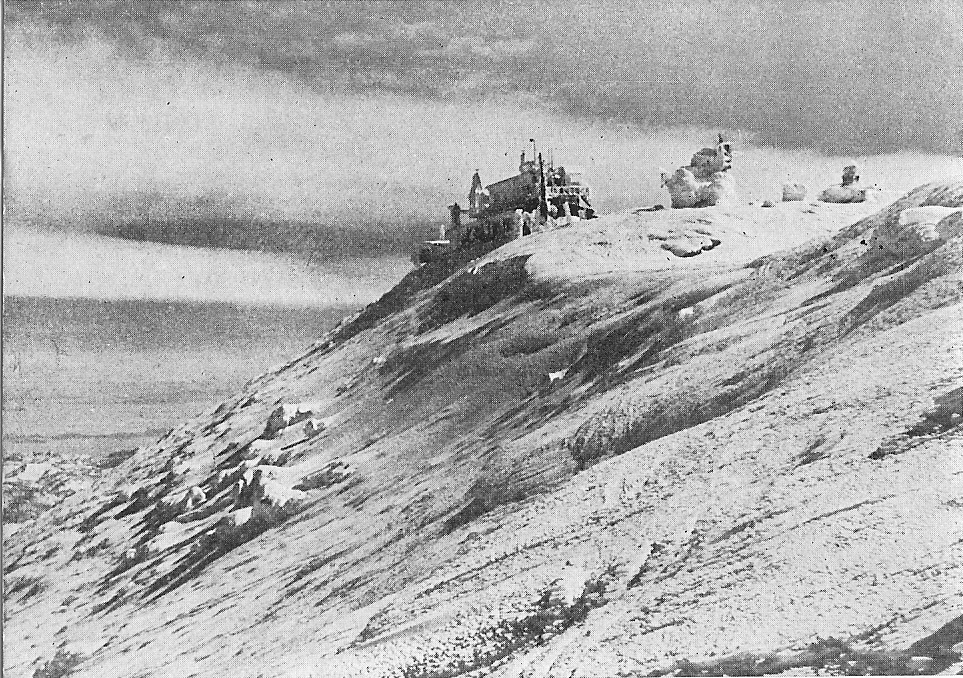
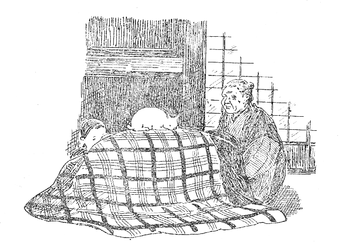
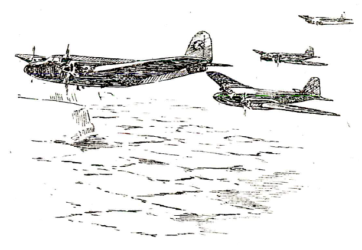
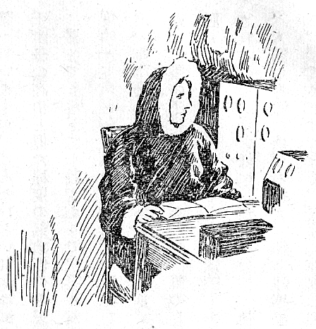

第６圖 ニセコ山頂の冬ごもり
［＃改丁］

第７圖
冬ごもりといえば、二米も三米もある深い雪に埋もれて、薄暗い部屋の中で炬燵にもぐり込んで、じっと春の來るのを待つような生活を考える人が多いであろう。そして今までの我が國での冬ごもりといえば、事實そういう生活を指していることが多かった。
秋田縣や山形縣から、雪の名所新潟縣はもちろんのこと、北陸地方一帶にかけて、私たちの祖先はそういう冬ごもりの生活を、今までに千五百年くらいもの間、ずっと續けて來ていた。そしてそれはごく近年までも續いているのである。
ところが世界はまことに廣大なもので、それに科學の進歩は止るところを知らない。それで廣く世界を見渡してみると、いろいろな冬ごもりが近年にはなされていた。そのうちで冬ごもりの世界記録というものを探すとしたら、それはソ聯のパパーニン一行の北極に於ける冬ごもりを第一に擧げるべきであろう。
ソ聯は國力を強めるために、國土計畫というものをたてて、國土全體の生産を如何にしてあげるべきかを、たくさんの科學者を集めて二十年來研究させ、それを着々と實行して來ていた。もちろんあの廣大なシベリアの開發も、その中での重要な題目であった。そのためには北方の氣象をよく知る必要がある。それにソ聯では、北極洋を碎氷船によって航海しようという、たいへんな大事業を計畫していた。そのためにも北方の氣象、特に北極附近の氣象を、一年を通じて測らねばならないので、その準備を、もう二十年も前から進めていた。
その準備が大體完了したので、いよいよ北極の氷の上に觀測所を作って、其處へ學者をやって、一冬の間冬ごもりをさせて、氣象觀測をやろうということになった。そういう夢のような計畫をほんとうに實行しようということにしたのが、昭和十二年の春であった。即ち日華事變の始まった年のことである。
北極には陸地は無いので、氷原の上にテントを張って、そこで一冬を過そうというのである。この觀測には、北極の氣象に關しては世界的の學者であるパパーニンを隊長として、皆で四人の學者があたることになった。四人の人間が、北極の氷の上で一年間住み、氣象の觀測をして、その報告を毎日モスコーへ無電で通報しようというのであるから、その準備がたいへんである。せっかく北極で冬ごもりをするのであるから、普通の氣象の觀測以外に、海洋學や地球磁氣の研究もすることになり、その器械も持って行くことにした。
一寸考えてみても、北極で一年暮すというのであるから、テント、食糧、防寒具、觀測器械、無電の發信器と受信器、その電源、燃料、醫藥品などなど、たいへんな荷物である。途中で何か欲しいといっても、來年の夏までは屆ける方法もないのであるから、器械が故障を起した場合の部分品から修理道具までも持っで行かねばならない。四人の觀測者とこれだけの荷物とを運ぶのに、船はとても北極までは行けないし、昔の北極探檢隊のように犬そりでは到底望みがない。犬そりによる北極や南極の探檢は、數人の探檢家が辛うじて極地に達して、すぐ歸って來ることすら、非常な難事業だったのである。
それでけっきょく飛行機で行くより外に方法がない。しかしそれだけの人と荷物とを載せた飛行機が北極まで飛んで、北極の氷原上に着陸して、人と觀測所とを殘して、又飛び歸って來るというのは、夢のような話である。しかしソ聯は、この人類の夢をほんとうに實現したのである。全器材と人員とを、四臺の大型飛行機に積み込んで、モスコーを出發し、無事にそれを北極まで屆けて、歸って來たのである。それが昭和十二年のことであって、日本では東京札幌間の定期航空が、冬近くなると、もう危險だといって休んでいた頃の話である。

第８圖 北極飛行
この飛行機を指揮したのは、ヴォドビヤーノフという飛行家であった。三月の終り近く、
北極に殘ったパパーニンの一行は、無事に冬を越し、その間毎日觀測結果をモスコーへ打電し續けた。ところが、その氷原が徐々に動き出したのである。觀測所のテントと四人の學者とを載せたまま、氷原は切れて、グリーンランドの方向へ漂流を始めた。そして翌年の夏、その氷塊がだんだん小さくなり、遂に崩潰しようとする直前に、彼等は再び飛行機によって救い出されたのである。その間、北極洋中を漂流する氷の上のこの移動觀測所の中で、彼等はずっと觀測を續けていたことはもちろんである。
この北極の冬ごもりを、世界での一方の横綱とすれば、今一方の横綱か大關くらいのところに、アメリカのバード少將の南極の冬ごもりがある。この方は詳しい記録は今手許にないが、南極大陸のとっつきの所に設置した米國探檢隊の基地から、何百キロかずっと南極の方へ進んだところに、前進基地を作ることになった。其處で一冬中氣象の觀測をしようというのである。その前進基地は、設備の關係上、冬ごもりの人は一人だけしか收容出來なかった。誰か一人だけその氷の中の小觀測所に立てこもって、一冬過さねばならない。途中病氣になっても、吹雪に埋まってしまっても、救いに行くことは出來ないのである。そういう話になった時に、その任務を買って出たのは、隊長のバード少將自身であった。
南極の恐ろしい冬を目前にして、遠征隊の一行は、バード少將をその場所へ送りとどけて、歸って來た。もうあとは來年の春まで、どんな事件が起っても、助けに行くことはもちろん、連絡をとる方法も無いのである。もっとも電話は架設してあったので、毎日聲の連絡だけは出來た。バード少將は、この氷の家の中で、唯一人で冬を越し、觀測を完了した。氷塊を積んで作った氷の廊下を通って、小さい圖書室へ行って、そこから本を持って來て讀んでいた。
途中でバード少將は風邪をひいた。そしてそれは一時かなり惡くなった。しかし電話では、一言も病氣のことを言わず、毎日無理をして元氣な聲を出して、話をしていた。それで基地にいた隊員たちは、春になって少將を救い出しに行くまでは、その病氣のことは全然知らなかったそうである。

第９圖 バード少將
アメリカにしても、ソ聯にしても、偉い學者が自ら卒先して、こういう死地にはいり込んで、自然の神祕をさぐり、科學のために邁進していたのである。そして羨しいことには、そういう科學上の大事業に、國家を擧げて後援を惜しまなかったのである。そういう國が優者となって地球上に殘るのは、當然のことてある。
こういう話と比較したら、まるで大人と子供よりももっとかけはなれた話であるが、私たちは、この戰爭の間、北海道のニセコアンヌプリという山の頂上で、二冬冬ごもりをした。目的は雪中飛行に關聯した航空氣象の研究のためであった。
この山は、約千四百米くらいの高さで、山としては高山の部類にははいらないかもしれない。しかし日本海から吹きつけて來る冬の季節風をまともに受ける難所である。途中で、富士山頂の觀測所長で、十何年も冬の富士山頂を知っているＦ氏の訪問を受けたことがある。「永年富士へ登っていますが、こんなひどい日には滅多にあいません」という話であったから、まず内地の三千米級の高山と似た程度の氣象條件と思っていいであろう。
眞冬でも零下二十數度止りで、案外氣温はそう低くないのであるが、厄介なのは風である。一度四十五米という風を、風力計で記録したことがある。普通口ではよく五十米の烈風などというが、そんな風は滅多に無いものである。雪山で正味三十米の風にあうと、とても立っては居られない。雪の上に腹ばいになって、風の息をうかがいながら、一寸弱くなった隙にちょこちょこと動いて、又腹ばいになるという状態である。三十五米になると、腹ばいになっていても吹きとばされるので、はい松にしがみついて、待っていなければならないくらいである。
人間の身體に感ずる寒さ、即ち體感温度は、氣温とはちがうので、風があるとひどく寒く感ずる。感ずるだけでなく、實際に凍傷を起し、凍死の原因となるのは、氣温ではなくて、體感温度の方である。氣温が低くなると、風速一米が氣温の二度くらい、或はそれ以上にも相富するのである。それでニセコアンヌプリの山頂では、私たちは、體感温度にしたら、零下八十度にも九十度にもなるところで、實驗をしていたわけである。
そういうところに觀測所を建てて、多い時には二十人以上、少い時でも十人くらいの研究者と技術員とが、冬ごもりをした。そして氣象の觀測をしたり、精密を要する物理の實驗をしたりして二冬を越した。水は無いので、雪をとかして炊事をし、夜は六疊の間に八人くらいの割合でごろねをした。今から考えてみると、元氣なものであった。そういう研究者たちに、軍需工場の徴用工並みの特配もして貰えなかったが、誰も不平を言わずに、一所懸命に研究をした。
成果は別問題としても、一冬に延べ二千人以上の人員が、この山頂で研究と工作とに從事し、その間一人の病人も出なかった。よほど皆の氣分が緊張していたのであろう。それに毎日のように下と連絡の用事があって、冬中これ等の人員が登り降りをしていた。それでいて二冬の間に、一人も事故を起さなかったことは、非常に幸運なことであった。
もっとも或る晩、物凄い吹雪で、ごうごうと山が鳴り、家がゆれるような天候の時に、眞暗な外で、一寸風の音にまぎれて、人聲のようなものを聞いた。どうも人聾らしいというので、晝の實驗に疲れた研究者たちが、せっかくぬいだ防寒服を又着込んで、懷中電燈をたよりに搜索に出かけた。そしたら尾根のとっつきのところで、危く倒れかけている連絡員を見つけることが出來て、それをかつぎ込んだというような危いこともあった。二三度そういうこともあったが、けっきょく二冬の間に一度も事故を起さなかったのは、天祐というより外にはないであろう。
越冬者の數と、仕事の量からいえば、このニセコアンヌプリ山頂の冬ごもりくらいが、日本の冬ごもりのレコードであるかもしれない。
ソ聯やアメリカの話と較べたら、まことに情ない話であるが、それくらいのところが、實力相當なところだったのであろう。しかし諸君が大きくなる頃には、日本の國も今少しは科學を大切にするようになっているであろう。そうしたら、バード少將やパパーニンのような人も出て來るにちがいない。
（二一、一〇、二二）